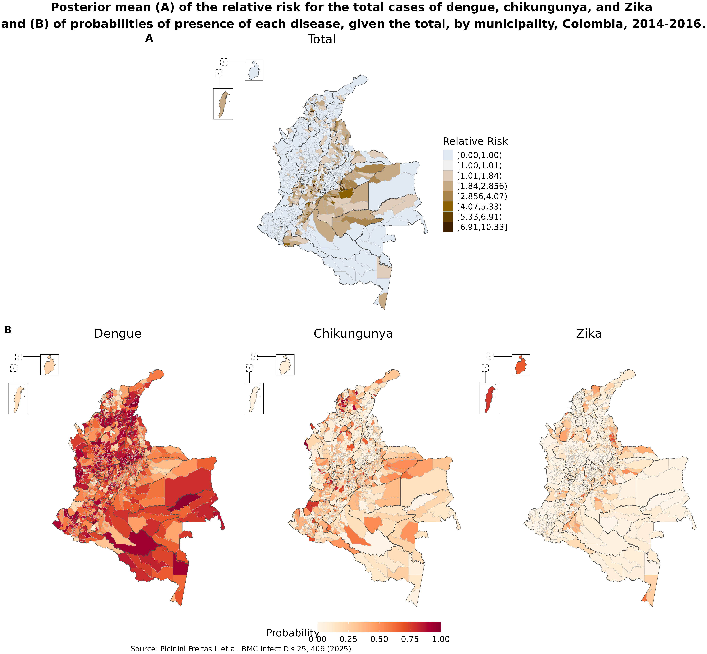
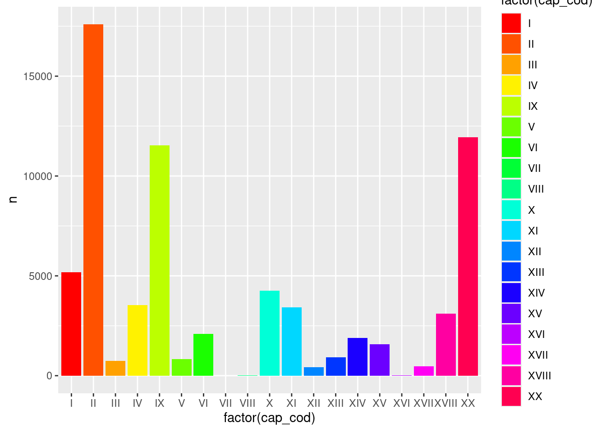
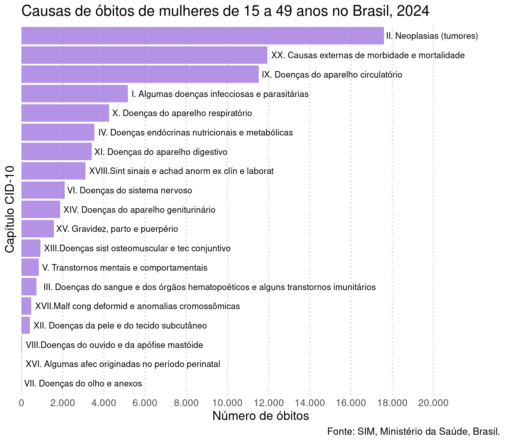
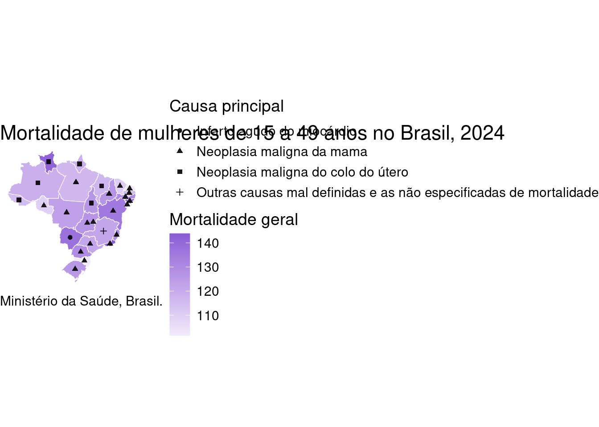
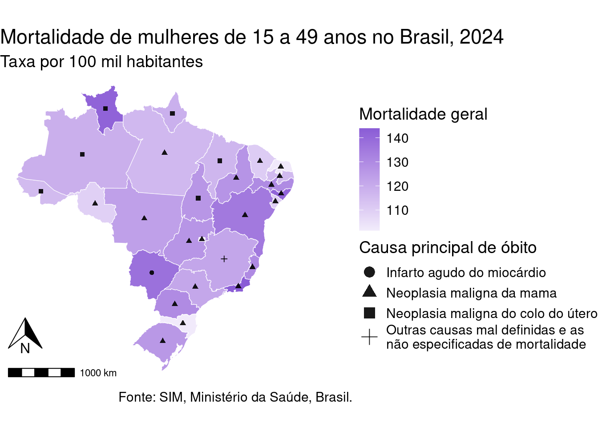
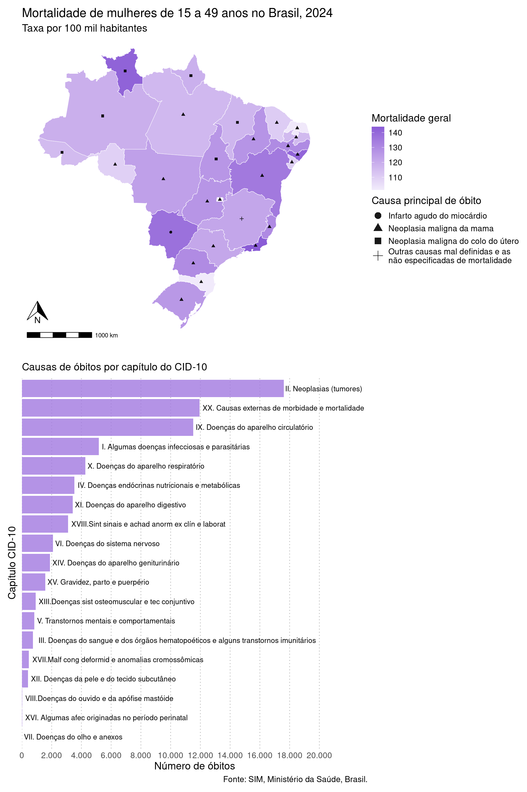

No Curso 1 - Capítulo 5 fomos introduzidos ao ggplot2, conhecendo sua gramática que permite criar gráficos com camadas e os principais tipos de gráficos. Agora, vamos a prender a refinar as visualizações com customizações avançadas.
Em Ciência de Dados, a visualização tem três papéis principais:
1) Explorar dados 2) Comunicar resultados 3) Contar uma história com dados
Mas o que seria um gráfico ruim e um gráfico bom?
Regra dos 5 segundos
Um bom gráfico deve ser compreendido em até 5 segundos. Pergunte-se:
O que está sendo mostrado?
O que devo comparar?
Qual é a mensagem?
Se isso não estiver claro, o gráfico precisa ser melhorado.
3.1 Boas práticas de visualização
1. Clareza acima de tudo
O leitor deve entender o gráfico em poucos segundos! Evite: excesso de informação, títulos vagos, eixos sem unidade, legendas confusas. Sempre inclua título informativo, rótulos, unidade de medida, legenda clara. Se relevante, inclua também a fonte dos dados.
2. Menos é mais: evite elementos visuais desnecessários
Se não transmite informação, remova! Exemplos: fundos coloridos, grades excessivas, cores sem propósito.
3. Use cores a seu favor
Use cores para codificar informação, não apenas decorar! Sempre que possível, use cores adequadas para daltônicos. Evite cores muito saturadas e combinações difíceis de distinguir. Evite usar as mesmas cores/paletas para coisas diferentes!
Algumas cores são instintivamente interpretadas (exemplo: vermelho → calor / alerta / risco, azul → frio / calma / proteção). Usar essas cores de forma contraituitiva, ou seja, invertendo esse significado, atrapalha, e muito, a visualização, podendo inclusive levar a erros de interpretação, mesmo com legenda! A regra geral é alinhar cor com significado natural para que a mensagem seja o mais clara possível.
Veja o exemplo abaixo:
Nesse exemplo:
Foram utilizadas paletas diferentes para cada variável.
Buscou-se alinhar as paletas com a interpretação “instintiva” das cores (tons mais azulados para “frio”, “úmido” e “chuvoso”, terroso para menor cobertura vegetal (valores baixos de NDVI) e verde mais forte para maior cobertura vegetal).
4. Destaque o que é importante
O leitor deve ser capaz de perceber o foco do gráfico rapidamente. Isso pode ser feito ordenando a informação, usando cores para destaque, adicionando anotações, entre outras estratégias.
5. Mantenha a consistência visual
Mantenha a consistência na formatação (tema, tamanho, fontes) e no uso de cores nas figuras. Para gráficos diferentes que representem a mesma coisa, use a mesma cor/paleta. Se precisar de diferentes cores/paletas, busque cores com saturação e luminosidade parecidas, para manter a harmonia! (Dica: Este site é muito útil para encontrar cores harmônicas!)
Veja o exemplo abaixo:

Os quatro mapas estão com o mesmo tamanho, fontes, e tamanho de fontes.
O primeiro mapa apresenta o risco relativo, logo, usa uma paleta de cores divergente, pois valores abaixo de 1 tem uma interpretação, enquanto valores acima de 1 tem outra. Perceba que as categorias foram criadas para respeitar esse ponto de corte.
Já os três mapas abaixo, apesar de serem de doenças diferentes, são todos mapas que representam probabilidade de presença, e por isso estão na mesma paleta de cores. Perceba também que esses três mapas estão na mesma escala numérica!
Repare que para o mapa A, do risco relativo, não foi utilizada a paleta “padrão” Azul-Vermelha. Essa escolha foi para poder usar a paleta com vermelho para os mapas em B. Porém, manteve-se o azul no mapa A no seu sentindo “instintivo”, representando “baixo risco”.
3.2 Exemplo 1: Gráfico de causas de mortalidade entre mulheres em idade fértil
Para exemplificar, vamos trabalhar com dados de causas de óbitos entre mulheres em idade fértil (de 15 a 49 anos) em 2024 no Brasil, obtidas do Sistema de Informações sobre Mortalidade (SIM) através do pacote microdatasus(saiba mais aqui).
Caso queira treinar os seus conhecimentos do curso passado, fique à vontade para pegar os microdados e tratá-los para que fiquem no formato necessário para a visualização que vamos fazer, é um excelente exercício! Pra facilitar, aqui vai uma colinha, e já preparamos uma tabela com os capítulos do CID-10 que precisa juntar com a tabela de casos (lembram do left_join()?).
Tente preparar os dados para ao final ter a seguinte estrutura:
# A tibble: 19 × 4 cap_cod capitulo_cod capitulo_desc n<chr><dbl><chr><dbl>1 I 1 I. Algumas doenças infecciosas e parasitárias 51732 II 2 II. Neoplasias (tumores) 176053 III 3 III. Doenças do sangue e dos órgãos hematopoéticos e alguns transtornos imunitários 7364 IV 4 IV. Doenças endócrinas nutricionais e metabólicas 35375 IX 9 IX. Doenças do aparelho circulatório 11526# ℹ 14 more rows
Quer focar na parte de visualização agora? Tudo bem, vamos pegar os dados já arrumados!
# A tibble: 19 × 4
cap_cod capitulo_cod capitulo_desc n
<chr> <dbl> <chr> <dbl>
1 II 2 II. Neoplasias (tumores) 17605
2 XX 20 XX. Causas externas de morbidade e mortalidade 11938
3 IX 9 IX. Doenças do aparelho circulatório 11526
4 I 1 I. Algumas doenças infecciosas e parasitárias 5173
5 X 10 X. Doenças do aparelho respiratório 4262
6 IV 4 IV. Doenças endócrinas nutricionais e metabólicas 3537
7 XI 11 XI. Doenças do aparelho digestivo 3416
8 XVIII 18 XVIII.Sint sinais e achad anorm ex clín e laborat 3111
9 VI 6 VI. Doenças do sistema nervoso 2096
10 XIV 14 XIV. Doenças do aparelho geniturinário 1886
11 XV 15 XV. Gravidez, parto e puerpério 1574
12 XIII 13 XIII.Doenças sist osteomuscular e tec conjuntivo 920
13 V 5 V. Transtornos mentais e comportamentais 837
14 III 3 III. Doenças do sangue e dos órgãos hematopoético… 736
15 XVII 17 XVII.Malf cong deformid e anomalias cromossômicas 472
16 XII 12 XII. Doenças da pele e do tecido subcutâneo 414
17 VIII 8 VIII.Doenças do ouvido e da apófise mastóide 25
18 XVI 16 XVI. Algumas afec originadas no período perinatal 15
19 VII 7 VII. Doenças do olho e anexos 5
Vamos fazer um gráfico com a distribuição de óbitos das mulheres em idade fértil no Brasil em 2024 por capítulo de CID-10.
Uma tentativa inicial é:
ggplot(dadosCID, aes(x =factor(cap_cod), y = n, fill =factor(cap_cod))) +geom_col() +scale_fill_manual(values =rainbow(19))

Este gráfico é um bom gráfico? Por que?
Vamos tentar melhorar um pouco?
ggplot(dadosCID, aes(x =factor(cap_cod), y = n, fill = capitulo_desc)) +geom_col(show.legend =FALSE) +scale_fill_manual(values =hcl.colors(19, "Dynamic")) +labs(title ="Distribuição de óbitos de mulheres de 15 a 49 anos por capítulo do CID-10, \n2024, Brasil",x ="Capítulo",y ="Número de óbitos",caption ='Fonte: SIM, Ministério da Saúde, Brasil.' ) +theme_minimal()
Visualmente, já ficou muito mais agradável! E agora conseguimos saber do que o gráfico se trata. Repare que personalizamos apenas de forma básica, como já aprendemos no curso anterior. Excluímos a legenda, que era redundante, colocando a opção show.legend = TRUE em geom_col(), escolhemos uma paleta menos saturada, acrescentamos título do gráfico e dos eixos com labs(), e colocamos um tema mais limpo (theme_minimal()). Porém ainda podemos melhorar! Esse gráfico funciona, mas ele comunica claramente? E o que você acha do uso de cores nesse gráfico?
Vamos tentar avançar um pouco mais? Veja o gráfico abaixo:

O que acha desse gráfico? Está mais informativo?
A principal diferença, logo de cara, é que rotacionamos o gráfico, ordenamos pelo capítulo de CID-10 com o maior número de óbitos, e acrescentamos rótulos com a descrição dos capítulos. Essas foram mudanças estruturais do gráfico. Também passamos a usar uma só cor e mudamos um pouco o título. Vamos ver como ficou o código?
g1 <-ggplot(dadosCID, aes(x =reorder(cap_cod, n), y = n)) +geom_col(fill ='#a178df', alpha = .8) +labs(title ="Causas de óbitos de mulheres de 15 a 49 anos no Brasil, 2024.",x ="Capítulo CID-10",y ="Número de óbitos",caption ='Fonte: SIM, Ministério da Saúde, Brasil.' ) +geom_text(aes(label = capitulo_desc),hjust =-0.02,size =3.5 ) +scale_y_continuous(breaks =seq(0, 20000, 2000),labels = scales::label_comma(big.mark =".", decimal.mark =","),expand =expansion(mult =c(0, 0.32))) +theme_minimal() +theme(axis.text.y =element_blank(), text =element_text(size =14),panel.grid.major.y =element_blank(),panel.grid.minor.x =element_blank(),panel.grid.major.x =element_line(linetype ='dotted', colour ='grey70') ) +coord_flip()g1
Vamos por partes! Rotacionamos o gráfico com coord_flip() (no final do código), e ordenamos pelo capítulo de CID-10 com o maior número de óbitos na primeira linha x = reorder(cap_cod, n). As cores não tinham uma função, eram redundantes. Então deixamos de usar fill = na estética (aes()) na primeira linha, e em vez disso, defimimos a cor em geom_col(), com uma leve transparência:
Agora partimos para modificações que são ajustes estéticos que fazem um polimento visual do gráfico. (Experimente fazer o gráfico sem essas modificações para ver como fica!)
Controlamos as quebras do eixo y com breaks e colocamos o . como marcador de milhar com a função label_comma() do pacote scales. O argumento expand = foi utilizado para adicionar espaço extra no eixo x para que os rótulos dos capítulos coubessem dentro do gráfico.
Por fim, modificamos o theme_minimal() com a função theme() excluindo o título do eixo x, aumentando a fonte do gráfico, excluindo elementos de grade que poluíam o gráfico, e deixando apenas linhas pontilhadas em cinza suave para marcar as quebras maiores do eixo x.
Poderíamos ainda destacar as principais causas de mortalidade no gráfico usando uma cor diferente, por exemplo, para as 5 primeiras. Tente fazer isso!
3.2.1 O pacote scales
O pacote scales faz parte do ecossistema do ggplot2 e possui funções para formatar e controlar escalas em gráficos. É muito útil para melhorar a forma como números aparecem nos eixos e rótulos, melhorando a legibilidade das visualizações e reduzindo o esforço necessário para entender valores numéricos. Veja abaixo algumas funções do scales.
Função
Para que serve
Exemplo de resultado
label_number()
Formatação numérica geral e evita notação científica
1e+05 → 100000
label_comma()
Adiciona separador de milhares
10000 → 10,000
label_percent()
Converte proporções em porcentagem
0.25 → 25%
label_dollar()
Formata valores monetários
1500 → $1,500
label_number_si()
Notação compacta (K, M, B)
1000000 → 1M
label_scientific()
Formata números em notação científica
1000000 → 1e+06
breaks_pretty()
Gera intervalos “bonitos” para eixos
0, 5, 10, 15...
breaks_width()
Define intervalos fixos no eixo
0, 2000, 4000...
breaks_log()
Gera intervalos para escalas logarítmicas
1, 10, 100...
Vimos no exemplo 1 o uso da função label_comma() para adicionar o separador de milhar. Em português, utilizamos . para milhar e , para decimal. Podemos especificar dentro da função:
Isso funciona mesmo se o limite superior dos dados mudar, tornando o código mais robusto.
3.3 Exemplo 2: Mapa da mortalidade de mulheres em idade fértil
Vamos voltar aos dados de óbitos de mulheres em idade fértil no Brasil em 2024. Vamos agora fazer um mapa que mostre, ao mesmo tempo por Unidade Federativa (UF):
a mortalidade geral e
a principal causa de mortalidade (categoria do CID-10) deste grupo.
Precisamos também da principal causa de mortalidade em cada UF. Vamos usar um símbolo na UF para identificar a principal causa, então precisamos das coordenadas do centroide da UF:
top_causa <- dadosUF |>filter(posicao ==1)centros <-st_centroid(mapa_uf)centros <- centros |>left_join(top_causa, by =c("abbrev_state"="uf"))
Agora vamos para a nossa figura.
ggplot() +geom_sf(data = mapa_dados, aes(fill = mortalidade), color ="white") +geom_sf(data = centros, aes(shape = DESC_CAT), alpha =0.9) +scale_fill_gradient(low ="#f2ecfb",high ="#8a5cd6" ) +labs(title ="Mortalidade de mulheres de 15 a 49 anos no Brasil, 2024",fill ="Mortalidade geral",shape ="Causa principal",caption ='Fonte: SIM, Ministério da Saúde, Brasil.' ) +theme_void() +theme(text =element_text(size =14))

Repare que mantivemos a consistência de cores, com uma gradiente de cor baseado na cor do gráfico de barras que fizemos anteriormente, e também de tamanho do texto.
Porém a figura tem alguns problemas, certo? Vamos tentar arrumá-los.
Veja que existe uma categoria de causa principal muito longa! Podemos incluir no código uma quebra do texto. Faremos isso acrescentando ao código:
Agora vamos melhorar as legendas. Temos duas legendas, e podemos usar guides() para modificar cada uma separadamente. Primeiro, vamos reordenar as legendas, de forma que a escala de cores para a mortalidade geral apareça primeiro. Veja que o tamanho dos símbolos na legenda é muito pequeno. Com guides() podemos aumentá-los sem aumentar o tamanho dos símbolos no mapa. Para isso, vamos acrescentar ao código o seguinte:
Também é boa prática incluir em mapas a escala e a seta para o Norte. Podemos fazer isso com o pacote ggspatial, acrescentando ao código:
# adiciona a escala do mapa:annotation_scale() +# adiciona a seta para o norte, aumentando o espaço para não ficar em cima da escala, e # diminuindo o tamanhoannotation_north_arrow(which_north ="true",pad_y =unit(1, "cm"),width =unit(1, "cm"),height =unit(1, "cm"))
O código final e a figura ficam assim:
library(ggspatial)gmapa <-ggplot() +geom_sf(data = mapa_dados, aes(fill = mortalidade), color ="white") +geom_sf(data = centros, aes(shape = DESC_CAT), alpha =0.9) +scale_fill_gradient(low ="#f2ecfb",high ="#8a5cd6" ) +scale_shape(labels = \(x) stringr::str_wrap(x, 35)) +labs(title ="Mortalidade de mulheres de 15 a 49 anos no Brasil, 2024",subtitle ="Taxa por 100 mil habitantes",fill ="Mortalidade geral",shape ="Causa principal de óbito",caption ='Fonte: SIM, Ministério da Saúde, Brasil.' ) +theme_void() +theme(text =element_text(size =14)) +guides(fill =guide_colorbar(order =1),shape =guide_legend(override.aes =list(size =4))) +annotation_scale() +annotation_north_arrow(which_north ="true",pad_y =unit(1, "cm"),width =unit(1, "cm"),height =unit(1, "cm"))gmapa

Uma das vantagens do guides() é que podemos controlar a aparência de cada legenda separadamente. Poderíamos, por exemplo, colocar a legenda de fill abaixo do mapa, mantendo a legenda de shape na direita, apenas incluindo position = 'bottom':
guides(fill =guide_colorbar(order =1, position ='bottom'),shape =guide_legend(override.aes =list(size =4)))
3.3.1 Usando guides()
A função guides() do ggplot2 controla como as legendas são representadas no gráfico.
No ggplot2, certas personalizações das legendas podem ser controladas por:
labs()
scale_*()
theme()
guides()
Cada uma tem um papel diferente.
Função
Papel principal
O que pode controlar nas legendas
Exemplos de uso
labs()
Define rótulos e títulos do gráfico
Título da legenda (nome da variável usada em aes())
labs(color = "Grupo", fill = "Categoria")
scale_*()
Controla como os dados são mapeados para estética visual
Cores, formas, tamanhos, ordem das categorias, valores exibidos e também o nome da legenda
Além disso, guides pode ser utilizado para alterar legendas de um gráfico que já está pronto, inclusive incluindo ou excluindo uma legenda.
Vamos alterar a legenda do mapa que fizemos, colocando uma delas para baixo. Podemos usar theme() combinado com guides() para aplicar mudanças apenas à uma legenda:
Existem muitos pacotes que extendem as funções do ggplot2. Vamos ver alguns deles aqui.
3.4.1 Juntando gráficos com patchwork
Dentre os pacotes mais utilizados com o ggplot2 estão aqueles que servem para criar painés de gráficos, destacando-se o patchwork. O patchwork trata os gráficos como objetos que podem ser combinados com operadores matemáticos.
Por exemplo, o operador | coloca gráficos em colunas, enquanto o operador / empilha linhas:
gmapa3 <- gmapa +theme(plot.caption =element_blank())g2 <- g1 +labs(title ='', subtitle ='Causas de óbitos por capítulo do CID-10')library(patchwork)gmapa3 / g2

Os principais usos do patchwork estão resumidos abaixo. Para saber mais, acesso os guias disponíveis aqui.
Uma das funções que criam gráficos estilizados com ggpubr é a ggdotchart. Vamos fazer um gráfico desses. Perceba que podemos modificar esse gráfico da mesma forma que modificamos um criado com ggplot2:
Existem muitos outros pacotes que vão ser mais ou menos úteis dependendo do tipo de dado que você trabalha. Alguns bastante comuns na Epidemiologia são:
Pacote
Para que serve
Principais funções
ggridges
Criar gráficos de densidade empilhados para comparar distribuições entre grupos
geom_density_ridges(), geom_ridgeline()
ggrepel
Evitar sobreposição de rótulos em gráficos
geom_text_repel(), geom_label_repel()
ggstatsplot
Gerar gráficos com testes estatísticos automáticos integrados
ggbetweenstats(), ggscatterstats(), ggbarstats()
ggcorrplot
Visualizar matrizes de correlação de forma clara
ggcorrplot()
ggwordcloud
Criar nuvens de palavras com layout flexível e controle estético
geom_text_wordcloud(), geom_text_wordcloud_area()
ggnewscale
Permitir múltiplas escalas de cor ou preenchimento no mesmo gráfico